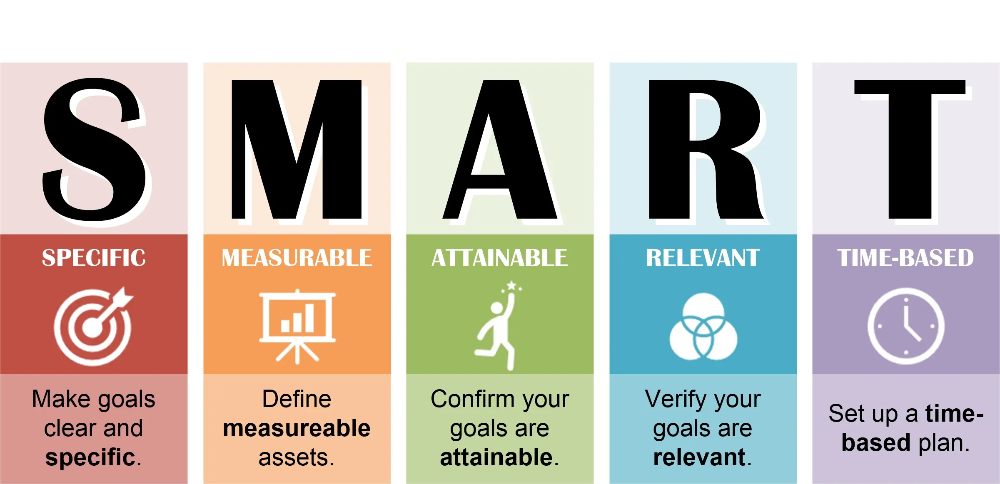
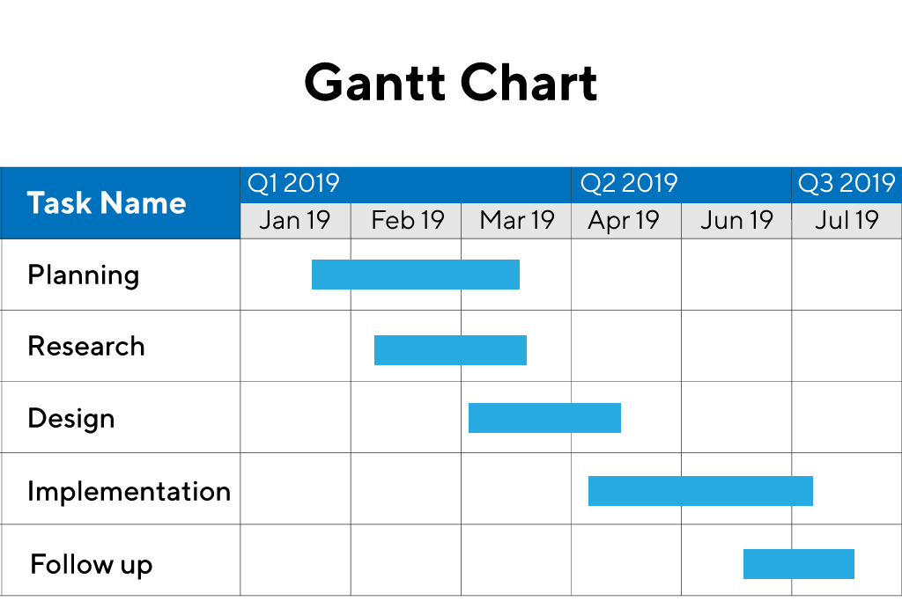

2 Self-management and taking notes
Methods in linguistics
Research questions (Litosseliti 2025)
Discussion
1. Why can well-formulated research questions be seen as the “compass” of a study?
- They pinpoint exactly what you need to discover, guiding your choice of data sources and analytical tools
- A vague question leads to unfocused data collection and mismatched methods, risking inconclusive or irrelevant results
2. Pick a linguistic phenomenon (e.g. code-switching). How would you turn that into a descriptive vs. an explanatory research question?
- Phenomenon: Code-switching
- Descriptive: “What patterns of code-switching occur among bilingual teenagers in Munich?”
- Method: Corpus analysis of recorded conversations
- Explanatory: “Why do bilingual teenagers switch codes more frequently in peer-group settings than in family interactions?”
- Method: Mixed design—interviews to probe motivations plus quantitative counts
- Descriptive: “What patterns of code-switching occur among bilingual teenagers in Munich?”
3. What does “operationalizability” mean in the context of research questions, and why is it crucial?
- Meaning: Defining each concept in measurable, observable terms so data and methods map directly onto your questions
- Importance: Ensures clarity, replicability, and that findings actually address the questions posed
- Example (“politeness”):
- Definition: Use of formal pronouns (Sie vs. du) and mitigators (bitte, könnten Sie…) in German requests
- Measurement:
- Count occurrences of Sie vs. du in a corpus of service-encounter dialogues
- Rate politeness markers per utterance (0 = none, 1 = one marker, 2 = multiple markers)
Tips for working towards and refining a research question
- topic
- research question 1
- hypothesis
- why? (→ literature)
- hypothesis
- research question 2
- research question 1
Key points
- Research questions are the “compass” of empirical studies: they define what data you need, how to collect it, and how to analyse it
- They can emerge from gaps in the literature, existing sites of inquiry (e.g. social events or phenomena), or unexpected findings in your own data
- Unlike precise, testable hypotheses, research questions are broader, exploratory, and open-ended – ideal for qualitative work
- Formulated as Who/What/How/Why/To what extent?, questions may be descriptive (What), explanatory (Why) or evaluative, each suggesting different methods
- Key distinctions:
- Primary vs Secondary (importance/data volume)
- Main/Contributory & Overarching/Subordinate (hierarchies)
- Empirical/Methodological/Theoretical/Speculative (focus of inquiry)
- Researcher- vs Participant-Generated (whose concerns drive it)
- Start with many questions, then narrow to those you can fully address within time/resources
- Operationalizability: define every term clearly and link each question to specific data and methods
- Each question dictates your:
- Data (e.g. corpus vs interviews)
- Collection design (e.g. experiment vs naturalistic recording)
- Transcription conventions & analytical framework (e.g. corpus analysis, discourse analysis)
- In write-ups, document origins, rationale, operationalization, and map questions to methods (tables/diagrams)
Note-taking
Plain text
WYSIWYG: What you see is what you get.
- guide: plain-text.co
- advantages
- interoperability
- over time
- with different tools
- with other people
- with LLMs (Large Language Model → ChatGPT)
- editing experience: speed, copy & pasting etc.
- export to different formats:
docx,html,pdf - version control via
git
- interoperability
- most popular format: Markdown
Networked notes
Mental lexicon

Networked notes (concept)

Zettelkasten method

- Origin: Sociologist Niklas Luhmann (> 70 books)
- Book: Ahrens (2017)
- Website: zettelkasten.de
Tools
- free options
- Obsidian (recommended)
- Capacities
- Logseq
- paid: e.g. Notion
Self-management
General principles
- Keep it simple, both in terms of planning and tools
- Almost any system can work, as long as it’s a system and you use it consistently
Setting SMART goals

Managing TODOs
- Include all your TODOs (from other projects, private commitments)
- Set TODOs the right way:
- Actionable
- Have a date (scheduled start & deadline)
- Make a plan (weekly & daily time slots)
- Review your days, weeks, months, year
Prioritising tasks
Marbles in a jar
Pareto’s law
- 20% of actions can give 80% of results
- The remaining 20% of results will require 80% of the time
Eisenhower matrix

Task management tools
Frameworks for productivity
- Getting Things Done (GTD) by David Allen
- Zen to Done (ZTD) by Leo Babauta (a simpler version of GTD)
Making a time plan
- Start with the end in mind: work backwards from the deadline
- Use buffers: everything takes longer than we think
- Tools:
- Calendar
- Gantt charts

Gantt chart
Exercises
Taking notes with Obsidian
- Install Obsidian from obsidian.md
- Create a new “vault”
- Start drafting your research questions:
- Use Markdown formatting
- Create links to related concepts (e.g.
[[sociolinguistics]],[[COCA]]) - Check the graph view for connections between concepts
- Export your notes as PDF for submission
Self-management
Setting goals
Set a SMART goal
Prioritise
Prioritise your tasks for the next 7 days:
- 80/20 Pareto rule
- Eisenhower matrix
Manage your time
Make a specific time plan (for your research project)
Tools
- Digital calendar
- TeamGantt or similar
Project agenda
- Determine topic, research questions, hypotheses
- Find and read previous literature
- Collect and pre-process data
- Conduct analysis, gather results
- Write the paper
- Revise your paper
References
Ahrens, Sönke. 2017. Das Zettelkasten-Prinzip: Erfolgreich wissenschaftlich schreiben und studieren mit effektiven Notizen. BoD–Books on Demand.
Litosseliti, Lia. 2025. Research Methods in Linguistics. Bloomsbury Academic. https://www.bloomsbury.com/in/research-methods-in-linguistics-9781350429178/.